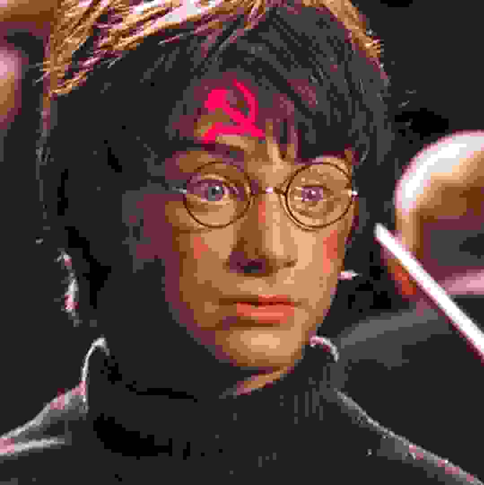

Harry Potter Becomes A Communist
by: HardcoreCommie
I dont own HP. JKR does butt it should be owed by the stat cuz privacy property is evil lol. Workers of the world urinite! If you flam you have false consciousness.
"Harry, you look different," said Hermione as I joined her and Ron in a compartment on the Hogwarts Express.
I suppose I did. I was wearing an ushanka with a Red Star, a Che Guevara T-shirt, and browline glasses. I had grown a scruffy beard and had had my scar changed from a lightning bolt to a hammer and sickle.
"Why are you wearing a shirt with that murderer on it?" asked Hermione as I sat down.
"He's not a murderer, he's a soldier," I explained. "I'd be offended, but I know you've been brainwashed by the bourgeoisie capitalist establishment. You're suffering from false consciousness."
"What's false consciousness?" asked Ron curiously. I knew he would be more open to communist ideas because he was part of the proletariat, whereas Hermione was part of the bourgeois intelligentsia.
"False consciousness is when people think communism is bad," I explained. "Since communism is good, it means they're obviously insane."
"Harry, are you a communist?" asked Hermione in a quiet voice. I could tell she was scared, probably of losing her private property.
"As a matter of fact, I am!" I said, knowing I had nothing to be ashamed of. "Uncle Vernon was complaining about communists one day and I decided that anyone hated by Uncle Vernon couldn't be that bad. So I read The Communist Manifesto and discovered how the world really worked."
"But — but," said Hermione, at a loss for words, "President Reagan said the Soviet Union was the evil empire. He wouldn't have said that if it weren't true!"
I signed, wondering if Hermione was too deep in false consciousness to ever come around to the correct way of thinking.
... videre til neste kapittel >